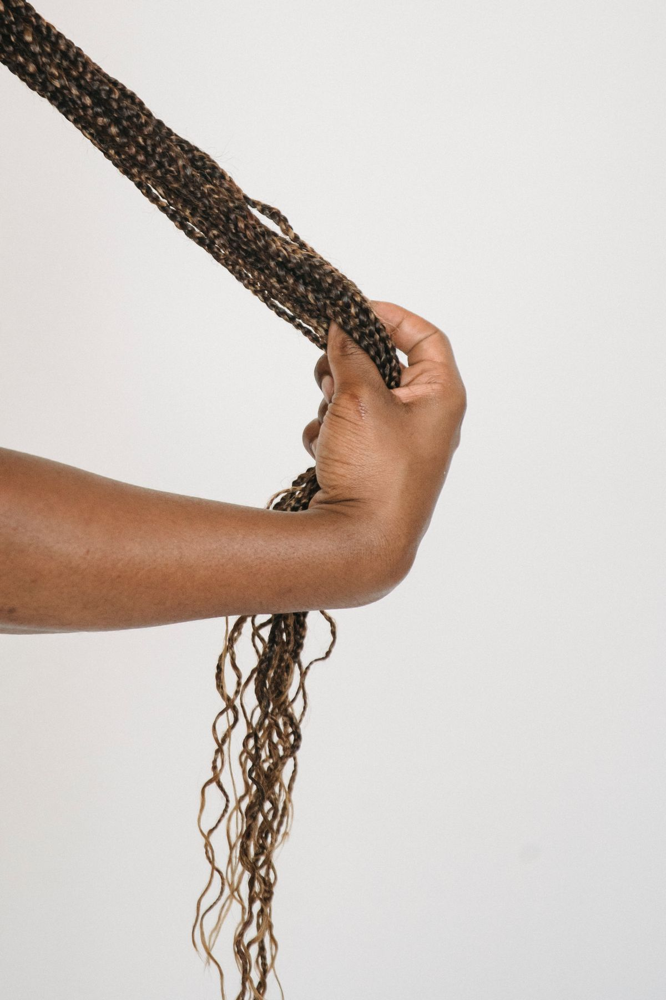
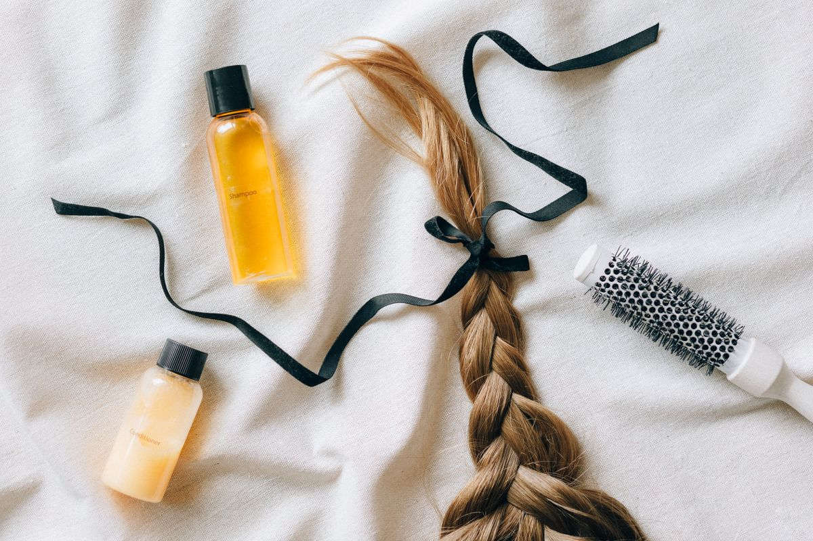

Stop, 4 Steps to Take Down Braids Without Losing Hair: 3 Signs, 1 Check for Your Takedown
It is a Sunday night in Miramar. The air outside is still warm and wet, the way it stays here long after dark. Your braids have been in for 6 weeks. They looked great at week 2. Now your scalp itches, your edges look fuzzy, and the new growth at the root puffs up along Miramar Parkway every time you step out into the heat. You sit down with a pair of small scissors and a comb, and you think: I want these out, but I do not want to lose the hair I grew. That fear is smart. Most of the hair lost with braids is not lost in the chair on day one. It is lost on takedown night, in a rush, with dry hair and a hard comb. This post slows that night down. You will learn the 4 steps, the 3 signs to watch for, and the 1 check to run before you wash.
Take your braids down slow, on damp hair, one braid at a time, and take the shed hair out of each part before you move to the next one. Cut only the added hair, well below where your own hair ends. Undo each braid from the tip up to the root. Open the knot of shed hair and dirt at the root with your fingers first, then with a wide comb, from the ends up. Wash only after all the loose hair is out. Done this way, the big ball of hair you see is mostly shed hair your head let go of day by day for 6 weeks, not new loss.
Why does so much hair come out when braids come down?
Your head lets go of hair every day. Hair pros and skin doctors put the normal count at about 50 to 100 hairs a day. On a normal day, those hairs fall in the sink, in the brush, and on your shirt. You do not see them pile up.
Braids change that. A braid holds each shed hair in place. The hair let go of your scalp on day 3 is still sitting in the braid on day 30. It had nowhere to fall.
Now do the math for a style worn 6 weeks. 6 weeks is 42 days. 42 days times 50 hairs is 2,100 hairs. 42 days times 100 hairs is 4,200 hairs. So a ball of 2,000 to 4,000 loose hairs on takedown night can be plain daily shed, saved up by the braids. It looks scary. Most of it is not new loss.
Here is how you can tell a shed hair from a broke hair. A shed hair is full length, and it has a tiny white tip at the root end. That white tip is the root that let go on its own. A broke hair is short, with no white tip. It snapped. A few broke hairs are normal in any takedown. A lot of short broke hairs, all through the pile, is a sign the takedown was too rough or too dry.
Why does this count? If you think all that hair is loss, you may panic. Panic makes hands fast. Fast hands rip. The rip is what causes real loss. Know the math, and your hands stay slow.

What do you need on the table before you start?
Get your tools out first, all of them, before the first braid comes down. You need small scissors with a clean edge. You need a spray bottle with water. You need a soft hair cream or a light oil for slip. Slip means the smooth feel that lets hair slide past hair with no grip and no snap. You need a wide comb. A wide comb is a comb with thick teeth set far apart. You need clips to hold parts apart. You need a soft towel. And you need time.
Time is a tool here. A full head of braids can take 2 hours or more to take down the safe way. Some heads take 3 hours. If you have 40 minutes before you must sleep, this is not the night. Pick a night with room in it. In South Florida, a good pick is a night with no plans the next morning, so the first wash and rest can happen with no rush.
Set up in good light. Sit where you can see your hairline in a mirror. The hairline, also called your edges, is the soft hair at the front and sides of your head. That hair is the most thin and the most easy to break. It gets the most care and the least force, all night.
One more prep step: take a photo of your hairline before you start, in the same light. That photo is your base line. Weeks from now, if you worry about your edges, you can look at the photo and see what is real, not what fear says.
How do you cut the added hair off without cutting your own?
Many braid styles use added hair. Added hair is hair that is not yours, braided in to add length and fullness. Your own hair ends somewhere inside each braid. Below that point, the braid is only added hair. Above that point, your hair and the added hair are mixed.
The rule is plain: cut low. Find where your own hair ends in the braid. Then cut at least 1 inch below that point. Below means farther from your scalp, toward the tip.
Why 1 inch? If you are not sure where your hair ends, the extra inch is your safe gap. A bit of added hair left to undo by hand costs you 2 minutes. An inch of your own hair cut by mistake costs you months of growth. Hair grows about half an inch a month. Half an inch times 2 months is 1 inch. So one bad cut can cost you 2 months of growth in one second.
Work braid by braid. Hold one braid. Feel down its length with your fingers. Your own hair is soft and thin near its end. The added hair past that point feels more stiff and full. When in doubt, cut lower. When you still can not tell, do not cut at all. Undo that braid by hand from the tip. It takes longer. It costs no hair.
Keep the scissors flat and slow near curly ends. Some styles end in curls. The curls can hide your own ends. If the end of the braid is curled, straighten it with your fingers first, look, then cut.

How do you undo each braid, step by step?
Step 1 of the 4 steps is the cut you just read. Step 2 is the undo. Spray the braid with water till it is damp, not dripping. Damp hair bends. Dry hair snaps. Put a bit of cream or oil on your fingers. Then start at the tip of the braid and undo it, one cross of hair at a time, up toward the root.
Undo in the same path the braid was made, just in reverse. A braid is 3 parts of hair crossed over each other, again and again. To open it, cross them back, one at a time. Do not pull the braid straight down to open it. Pulling down makes the crosses grip tighter at the root.
If a braid fights you, stop. Add more water and more slip. Wait 1 minute. Then try again with soft fingers. Hair that is wet with cream gives way. Hair that is dry and gripped does not.
Step 3 is the root work, and the next part of this post gives it a full section, because it is where most loss happens. Step 4 is the check before the wash, also below.
Do one braid all the way: undo it, clear it, clip it apart from the rest. Then do the next one. Do not undo all the braids first and clear them later. Loose hair from 20 undone braids will mat into one big knot while you work. One braid at a time keeps each knot small.
What is the knot at the root, and how do you open it?
This is the hardest idea in the whole post, so we will say it two ways.
At the root of each braid, where the braid meets your scalp, a small knot forms over the weeks. The knot is made of 3 things: shed hairs that slid down and got stuck, dirt and sweat from your scalp, and bits of the creams and sprays you used. In Miramar heat, sweat is a daily fact, so this knot is a normal fact too. The knot sits right where your new growth is. New growth is the fresh hair that grew out of your scalp while the braids were in. It is soft, curled, and easy to tear.
Picture tale one. Think of a knot in a shoelace. If you pull both ends of a shoelace knot hard, the knot gets smaller and tighter. It will not open. If you push the loops back toward the knot and pick at it with your nails, bit by bit, it loosens. The root knot in your hair works the same way. Pulling makes it tighter. Picking it apart, soft and wet, makes it open.
Picture tale two. Think of gum stuck in a rug. You do not rip gum out of a rug. You soften it first, then lift it off a bit at a time. Dry ripping takes rug fibers with the gum. The root knot is the gum. Your new growth is the rug fibers. Soften first with water and cream. Lift a bit at a time. Never rip.
Here is the method. Spray the root till it is damp. Rub a small bit of cream into the knot with the pads of your fingers. Pads means the soft front parts of your fingers, not your nails. Wait 2 minutes. Then use your fingers to pull the knot apart from the bottom edge, in tiny moves. You will feel shed hairs slide out. That is good. That is the knot letting go.
Only when your fingers have taken out all they can should the wide comb come in. Start the comb at the ends of that part of hair and move up in short strokes, half an inch at a time. Ends first, roots last. If the comb stops, your fingers go back in. The comb is for the last bit of smoothing. It is never for the first fight with a knot.
How do you take out the shed hair, one part at a time?
Work in parts you can hold in one hand. 4 to 8 parts for a full head is a good range. Clip each done part up and away, so it can not fall back into the parts you have not done.
In each part, the order is the same. Fingers first, to take out the bulk of the loose hair. Then the wide comb, ends up, to take out the rest. Then twist or clip that part so it stays clear.
Here are the 3 signs to watch for as you work. Sign 1: the comb glides. When a part is clear, the comb moves from ends to root with no stop. Sign 2: the pile slows down. The first parts give up a lot of shed hair. Later parts give up less, because you are keeping up as you go. Sign 3: your scalp feels calm, not sore. A calm scalp means your force is right. A sore spot means you pulled too hard on that part. Slow down and add slip there.
And here is the 1 check from the title. Before any water for washing hits your head, run this check: take each part, one by one, and comb it ends up with the wide comb. If every part combs clean with no knot and no stop, you pass the check. If one part stops the comb, that part still holds shed hair or a root knot. Clear it dry, with fingers, before the wash. Why dry? Water makes loose hair cling and makes small knots cinch tight. A knot you could have picked open dry can turn hard in the wash. The check takes 5 minutes. It saves your hair.

How do you wash your hair the first time after braids?
Once the check passes, you may wash. Keep your hair in its parts for the wash. Washing loose, all at once, can mat the hair back up in the sink or shower.
Wet one part. Put shampoo on your scalp, not in a big pile on the hair. Shampoo is for the scalp first: weeks of sweat and dirt sit there. Use the pads of your fingers to rub the scalp in small circles. Let the suds run down the hair as you rinse. That run of suds cleans the hair itself.
Wash each part the same way. If the water runs cloudy at first, that is the weeks of dirt leaving. A second soft wash is fine if your scalp still feels coated.
Then use conditioner. Conditioner is a cream that coats the hair to make it soft and smooth after washing. Put it on the hair, not just the scalp. Let it sit for a few minutes. Then detangle once more in the part, with your fingers and the wide comb, ends up, while the conditioner is in. This is the softest detangle of the whole night. Rinse with cool water.
Dry with care. Squeeze the water out with a soft towel or an old clean t-shirt. Do not rub. Rubbing roughs up the hair and can start new knots. Let the hair air dry in its parts if you can. Heat from a dryer is not banned, but your hair has just come out of 6 weeks of being held tight. A calm night is a good gift to it.
How do you care for your hair in the first 2 days after takedown?
Your hair has been held in one shape for weeks. In the first 2 days, treat it like it is tired. It kind of is.
Day one after the wash: keep styles soft and loose. No tight ponytail. No new braid style the same night. The scalp needs air and rest. If your scalp feels dry, a light oil on the scalp, in small drops, is fine. Small means drops, not a pour. Too much oil in Miramar humidity just sits on the scalp and pulls in dirt.
Day two: look at your hair with fresh eyes. Is the hair soft? Does it comb clean? How do your edges look next to the photo you took before takedown? If a spot feels thin or sore, note it. One sore spot after a rough takedown is a fact to learn from, not a reason to panic. Hair that was shed will grow back on its own cycle if the scalp is healthy.
Also in these 2 days, think about the rest your hair needs before the next style. Many heads do best with at least a few days of rest between a takedown and a new install. Some heads need a week or more, most of all if the last style was tight or the edges feel sore. A trim may help too. A trim is a small cut that takes off dry, split ends. Split ends are ends that have split into 2 thin bits. They catch on each other and make knots. Your stylist can look and tell you if a trim is due.
When should you let the shop take your braids down instead?
Do it at home if your style is plain, your scalp is calm, and you have the time and the light to work slow. Book a takedown at the shop if any of these are true.
Your braids are very small and very many, and the last takedown at home took all night and still left knots. Your scalp is sore, red, or has bumps that hurt. Your hair is matted at the roots in a way your fingers can not open after water and cream and 10 patient minutes. Your edges look thin and you want a pro set of eyes on them before the next style. Or you just know your hands get fast when you get tired. There is no shame in that. Most of us are like that at hour 3.
At KuuStore in Miramar, a takedown is done the same slow way this post teaches: one braid at a time, shed hair cleared part by part, wash after the clear. And when you book your next style, the deposit is $25 for all services, and that $25 is applied in full toward your total. So if your next style costs a set price, your balance on the day is that price minus the $25 you already paid. The deposit holds your chair time. It is not an extra fee on top.
Checklist:
- Block out 2 to 3 hours, with no early morning plan the next day
- Lay out small scissors, spray bottle, cream or light oil, wide comb, clips, and a soft towel
- Take a photo of your hairline in good light before the first braid comes down
- Cut added hair at least 1 inch below where your own hair ends, or undo by hand if you can not tell
- Undo one braid at a time, tip to root, and clear that part before you touch the next braid
- Soften each root knot with water and cream, open it with your fingers, and comb ends up only after your fingers are done
- Run the 1 check: every part combs clean, ends to root, before any wash water hits your head
- Wash in parts, condition, detangle once more with conditioner in, and squeeze dry without rubbing
Your free tool for this step
Use the Braid & Loc Price Planner on the KuuStore site: https://kuustore.life/braid-loc-price-planner.html
A price planner is a page that helps you work out what a style may cost before you book, based on the style, the size, and the length you pick. Hair prices at KuuStore are tiered. Tiered means the price moves in clear steps based on 2 things: how long the style is, and how small the parts are. Smaller parts and longer length mean more chair time, and more chair time is what you are paying for.
Here is how to use it for this step. Your braids are down, your hair is washed and rested, and you are thinking about what comes next. Open the planner. Pick the style you want next. Pick the size of parts you want. Pick the length. The planner shows you the price for that mix, so you can plan your budget and your day with no guess work. Try 2 or 3 mixes. A longer length in a bigger part size may fit your budget and your chair time better than the mix you first had in mind.
The planner does not book your chair. It does not hold your spot. When you are ready to book, that step is apart, and the $25 deposit for all services holds your time, applied in full toward your total. What the planner does is take the price shock out of booking day. You walk in knowing your number, because you built it yourself, step by step.
The bottom line
A braid takedown is not a race. It is 4 steps: cut low, undo slow, clear the root knot with soft fingers, and run the 1 check before you wash. The big pile of hair is mostly math: 50 to 100 shed hairs a day, times 42 days, is 2,000 to 4,000 hairs the braids were holding for you. Watch the 3 signs: the comb glides, the pile slows down, and your scalp stays calm. If your head is matted, sore, or too much for one night, let the shop do it. That is what the chair is for.
Your next step is small. Pick your night. Lay out your tools. Take the hairline photo. Then start with one braid, and keep your hands slow. Your hair kept its length for 6 weeks in those braids. One calm night is how you keep it on takedown day too.